Ecosystems & Environments
How can we start creating culture as data?
Today’s Agenda
- Complete Python Refresher review
- Review Complex Python and Virtual Environments lessons
- Time permitting work in groups
Final Review of Python Refresher
What are Built-In Methods?
What are some of the built-in methods you have learned so far?
How can we check the type or length of a variable?
How can we shorten text with a built-in method? What is a delimiter and how can we use it to manipulate strings?
How could we ask for user input with a built-in method?
What is Control Flow?
What happens if we call a variable before it is defined?
What is a for-loop? How do we write them in Python and why does indentation matter?
When we loop through a list, what does the variable represent and what is iteration?
What happens to that variable after the loop ends?
How would you loop through the keys and values of a dictionary?
What’s the .items() method?
What Are Functions?
What’s the syntax for creating a function?
What are arguments?
How do you pass data into a function?
Why would you use return in a function?
What happens to the returned value?
If you create a variable inside a function, can you use it outside?
What’s local scope vs global scope?
What Are Conditionals?
What’s the structure of a conditional statement?
What operators could you use to test conditions?
What’s the difference between = and ==?
How could you test more than one condition?
What keywords let you combine conditions?
What if you have more than two possibilities?
When would you use elif instead of multiple if statements?
Check In?
Any questions??
Reminder: Optional homework: Python Scripting Foundations
Programming Languages Have Histories
What Is a Programming Language?

History of Programming Languages

Where Did Python Come From?

Why Do Python Versions Matter?

Complex Python & Advanced Data Structures
What is a Class?
How can we tell if something is a class in Python?
What is object-oriented programming and how does it relate to classes?
When might we want to use a class instead of a dictionary or a list?
Programming Design Patterns

How to turn a function into a class?
def check_movie_release(movie):
if movie['release_year'] < 2000:
print(f"{movie['name']} was released before 2000")
else:
print(f"{movie['name']} was released after 2000")
return movie['name']
recent_movies = []
favorite_movies =[
{
"name": "The Matrix I",
"release_year": 1999,
"sequels": ["The Matrix II", "The Matrix III", "The Matrix IV"]
},
{
"name": "Star Wars IV",
"release_year": 1977,
"sequels": ["Star Wars V", "Star Wars VI", "Star Wars VII", "Star Wars VIII", "Star Wars IX"],
"prequels": ["Star Wars I", "Star Wars II", "Star Wars III"]
}
]
for movie in favorite_movies:
result = check_movie_release(movie)
if result is not None:
recent_movies.append(result)
print(recent_movies)What is the syntax of a class?
How could we create a class for our movies?
How do we add methods to a class?
Methods are functions inside a class. They operate on the instance’s data.
How can we add more attributes to a class?
Adding More Functionality
So what’s going in this code block?
class Movie:
"""Contains methods for data about a movie
Methods:
--------
add_directors
add_release_year
calculate_age
"""
def __init__(self, name):
self.movie_name = name
self.directors = []
self.release_year = None
self.age = 0
self.sequels = []
self.prequels = []
def add_directors(self, directors):
"""Adds a list of directors of the movie
Method argument:
-----------------
directors(list) -- A list of people who director the movie
"""
if isinstance(directors, list) is False:
directors = [directors]
self.directors.extend(directors)
def add_release_year(self, year):
"""Adds the release year of the movie
Method argument:
-----------------
year(integer or string) -- A year the movie was released
"""
self.release_year = int(year)
def add_sequels(self, sequels):
"""Adds a list of sequels to the movie
Method argument:
-----------------
sequels(list) -- A list of sequels to the movie
"""
if isinstance(sequels, list) is False:
sequels = [sequels]
self.sequels.extend(sequels)
def add_prequels(self, prequels):
"""Adds a list of prequels to the movie
Method argument:
-----------------
prequels(list) -- A list of prequels to the movie
"""
if isinstance(prequels, list) is False:
prequels = [prequels]
self.prequels.extend(prequels)
def calculate_movie_age(self):
"""Calculates the age of the movie
"""
from datetime import date
self.age = date.today().year - self.release_year
a_movie = Movie("The Matrix I")
a_movie.add_directors(["Lana Wachowski", "Lilly Wachowski"])
a_movie.add_release_year(1999)
a_movie.add_sequels(["The Matrix II", "The Matrix III", "The Matrix IV"])
a_movie.calculate_movie_age()
print(a_movie.age)
print(a_movie.add_directors.__doc__) # To view the docstring for the methodAdding More Methods
What if we wanted to add a method for printing out an entire movie’s information? What is this code doing and how can we call this method?
Adding More Classes
What if we wanted to store prequels and sequels as instances of our Movie Class? What is this code doing exactly?
class Movie:
"""Contains methods for data about a movie
Methods:
--------
add_directors
add_release_year
calculate_age
"""
def __init__(self, name, release_year=None):
self.movie_name = name
self.directors = []
self.release_year = release_year
self.age = 0
self.sequels = []
self.prequels = []
def add_directors(self, directors):
"""Adds a list of directors of the movie
Method argument:
-----------------
directors(list) -- A list of people who director the movie
"""
if isinstance(directors, list) is False:
directors = [directors]
self.directors.extend(directors)
def add_release_year(self, year):
"""Adds the release year of the movie
Method argument:
-----------------
year(integer or string) -- A year the movie was released
"""
self.release_year = int(year)
def calculate_movie_age(self):
"""Calculates the age of the movie
"""
from datetime import date
self.age = date.today().year - self.release_year
def add_sequel(self, sequel, release_year):
"""Adds a sequel to the movie
Method argument:
-----------------
sequel(string) -- The name of the sequel
release_year(integer) -- The release year of the sequel
"""
sequel_movie = Movie(sequel, release_year)
self.sequels.append(sequel_movie)
def add_prequel(self, prequel, release_year):
"""Adds a prequel to the movie
Method argument:
-----------------
prequel(string) -- The name of the prequel
release_year(integer) -- The release year of the prequel
"""
prequel_movie = Movie(prequel, release_year)
self.prequels.append(prequel_movie)
def get_movie_info(self):
"""Prints out the movie's information
"""
for key, value in self.__dict__.items():
if key in ['sequels', 'prequels']:
print(f"{key}: {[movie.movie_name for movie in value]}")
else:
print(f"{key}: {value}")
def calculate_movie_order(self):
"""Calculates the order of movies based on release year
"""
all_movies = [self] + self.sequels + self.prequels
all_movies.sort(key=lambda movie: movie.release_year)
return [movie.movie_name for movie in all_movies]
a_movie = Movie("The Matrix I")
a_movie.add_directors(["Lana Wachowski", "Lilly Wachowski"])
a_movie.add_release_year(1999)
a_movie.calculate_movie_age()
a_movie.add_sequel("The Matrix II", 2003)
a_movie.add_sequel("The Matrix III", 2003)
a_movie.add_sequel("The Matrix IV", 2021)
a_movie.add_prequel("The Matrix 0", 1998)
a_movie.get_movie_info()
print(a_movie.calculate_movie_order())How do we add inline comments?
How do we add block comments?
Documentation
In addition to comments, the other main resource for understanding how to use a class or function is the documentation. The documentation is a set of instructions that explains how to use a class or function.
This documentation explains how to define a class, how to create an instance of a class, and how to use methods in a class. It also explains how to use inheritance, which is a way to create a new class that inherits the attributes and methods of an existing class.
Learning to read documentation is a critical skill, so would highly recommend taking a look at the documentation when it is available.
Python Libraries & Imports
What is the Python Standard Library?
The Python Standard Library contains modules built into Python.
pathlib
Let’s scroll down to the pathlib module.
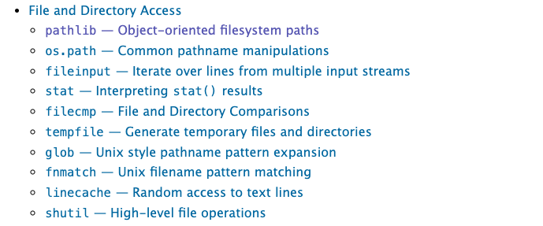
Pathlib
Now click on the link to the pathlib module.
pathlib Methods
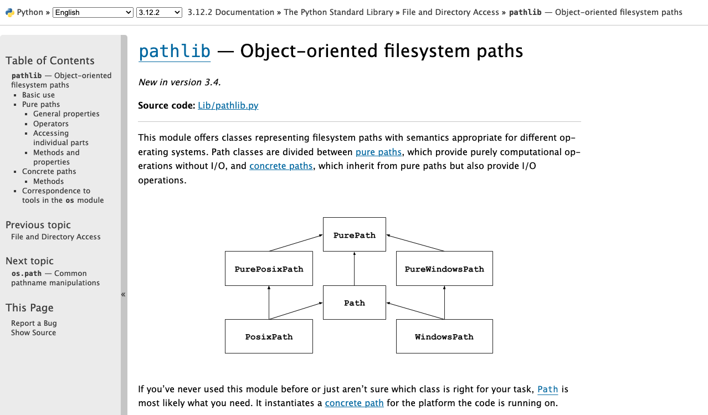
Pathlib Methods
First take a look at the current pathlib source code. Notice how it is organized, and try to find the definition of class Path (hint: use Control+F or Command+F).
Let’s take a look at the methods in the class Path https://docs.python.org/3/library/pathlib.html#methods. How would we would print out the current working directory using pathlib?
Importing Libraries
Let’s try importing pathlib into our script.
Aliasing Imports
Now you can use pl.Path() instead of pathlib.Path().
Using pathlib
So now that we’ve explored ways to import pathlib, let’s try using this module. We’ll start by using pathlib to print out the current working directory.
File Input and Output
But pathlib is useful not just for printing out working directories, it can also let us load in files.
Reading in Data
Let’s try it out with Pathlib by passing in one of the datasets from the Responsible Datasets in Context Project that we have been reviewing each week. You can use any of the datasets, but I’m selecting the one by Os Keyes and Melanie Walsh. “U.S. National Park Visit Data (1979-2023) – Responsible Datasets in Context.” Responsible Datasets in Context, June 1, 2024. https://www.responsible-datasets-in-context.com/posts/np-data/.
Once you’ve downloaded the data, you should have a file called US-National-Parks_RecreationVisits_1979-2023.csv. Now let’s try using pathlib to read in the data.
Reading Files
Now if this code worked, it should show you the path of your spreadsheet and then the type of the object, either <class 'pathlib.PosixPath'> or <class 'pathlib.WindowsPath'>. Calling Path() creates the appropriate concrete path class for the current operating system. PosixPath and WindowsPath are subclasses of Path, so they share the same general interface while handling operating-system-specific path conventions.
Reading Files
We can also look at the methods built into the Path class. One in particular is useful for us: read_text(), which reads the contents of a file and returns them as a string. Read more about it in the Path.read_text() documentation and test it out in your script.
What does this do?
Beyond Pathlib: Using the open Function
The open Built-in Function
So far we’ve been using pathlib to work with files, but Python also provides the built-in open() function for reading and writing files.
For example, we could use the open() built-in function in Python.
File Input - Basic Approach
To open a file for reading (input), we just do:
Here, we use the open() function to open a file in mode "r" (read). open() returns a file object that provides methods for reading and writing.
Using Path Objects with open
We could even just pass in our Path object to the open function:
At the end, we close the file so that its operating-system resources are released. Closing a file also ensures that buffered output has been written when we are writing rather than reading.
The with Statement
Often, you’ll see file handling used with the with keyword:
This performs the same reading operation, but the file is automatically closed at the end of the block, even if an error occurs.
File Output
File output is very similar. We just use mode w, which overwrites the file specified. We can also use x (which only works for new files) or a (which appends data at the end of the file).
| Character | Mode | Description |
|---|---|---|
r |
Read (default) | Open an existing file for reading |
w |
Write | Open for writing, truncating an existing file or creating a new one |
a |
Append | Open for writing at the end, creating the file if needed |
r+ |
Read and write | Open an existing file for both reading and writing |
x |
Exclusive creation | Create a new file and fail if it already exists |
Writing to a File Example
To understand file output, let’s try working with a file that doesn’t exist:
Once you run it, you should see a new file in your directory called new_text.txt, containing a list of numbers.
Type Conversion with write()
Here’s something tricky: i and i**2 are integers, but a text file’s write() method expects a string. If we try output_file.write(i**2), we’ll get: TypeError: write() argument must be str, not int
To get around this, we can convert from int to string using str():
The newline character "\n" inserts a line break. Without it, all the numbers would be on the same line.
Example: Save Movie Info
Here’s a function to save the movie’s information to a file:
def save_movie_info(self, file_name):
"""Saves the movie's information to a file
Method argument:
-----------------
file_name(string) -- The name of the file to save the movie's information to
"""
with open(file_name, "w", encoding="utf-8") as f:
f.write(f"Movie Name: {self.movie_name}\n")
f.write(f"Directors: {', '.join(self.directors)}\n")
f.write(f"Release Year: {self.release_year}\n")
f.write(f"Age: {self.age}\n")
f.write(f"Sequels: {', '.join([sequel.movie_name for sequel in self.sequels])}\n")
f.write(f"Prequels: {', '.join([prequel.movie_name for prequel in self.prequels])}\n")Using Save Movie Info
Now you can call this function on your a_movie object:
a_movie = Movie("The Matrix I")
a_movie.add_directors(["Lana Wachowski", "Lilly Wachowski"])
a_movie.add_release_year(1999)
a_movie.add_sequel("The Matrix II", 2003)
a_movie.add_sequel("The Matrix III", 2003)
a_movie.add_sequel("The Matrix IV", 2021)
a_movie.add_prequel("The Matrix 0", 1998)
a_movie.calculate_movie_age()
a_movie.save_movie_info("movie_info.txt")Example: Read Movie Info
Here’s a function to read in a file and set the movie’s information:
def read_movie_info(self, file_name):
"""Reads in a file and sets the movie's information based on the file
Method argument:
-----------------
file_name(string) -- The name of the file to read the movie's information from
"""
with open(file_name, "r", encoding="utf-8") as f:
lines = f.readlines()
self.movie_name = lines[0].split(": ")[1].strip()
self.directors = lines[1].split(": ")[1].strip().split(", ")
self.release_year = int(lines[2].split(": ")[1].strip())
self.age = int(lines[3].split(": ")[1].strip())
self.sequels = [Movie(sequel.strip()) for sequel in lines[4].split(": ")[1].strip().split(", ")]
self.prequels = [Movie(prequel.strip()) for prequel in lines[5].split(": ")[1].strip().split(", ")]Using Read Movie Info
Now you can call this function on your a_movie object:
Virtual Environments & Packages
What is a Virtual Environment? Why do we need one?

Why Virtual Environments Matter
From the Python documentation:
“Python applications will often use packages and modules that don’t come as part of the standard library. Applications will sometimes need a specific version of a library, because the application may require that a particular bug has been fixed or the application may be written using an obsolete version of the library’s interface.
This means it may not be possible for one Python installation to meet the requirements of every application. If application A needs version 1.0 of a particular module but application B needs version 2.0, then the requirements are in conflict and installing either version 1.0 or 2.0 will leave one application unable to run.
The solution for this problem is to create a virtual environment, a self-contained directory tree that contains a Python installation for a particular version of Python, plus a number of additional packages.”
You can read more here about virtual environments.
What About pip?
pip is Python’s package installer. A virtual environment created with venv normally includes it automatically, so we do not need to install packages globally before creating .venv.
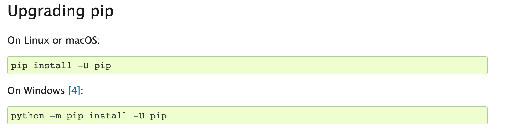
install pip
Check pip After Activation
After .venv is created and activated, check the environment’s copy of pip with:
If Python reports that pip is unavailable, follow the official pip installation instructions or ask an instructor for help.
venv
Now we’ll use the built-in Python virtual environment, called venv, which you can read more about here https://docs.python.org/3/library/venv.html. One thing to note is that there are LOTS of different ways to setup your virtual environment (which lots of people have very strong feelings about). I like this answer from Stack Overflow for giving an overview of the differing options https://stackoverflow.com/a/65854168/7437781.
Creating Virtual Environments
Now that we have a sense of what a virtual environment is, let’s create a project-local environment named .venv. We’ll start in VS Code and then look at the equivalent terminal commands.
Creating Virtual Environments in VS Code
Note
This information has been adapted from the VS Code documentation for Python environments.
In VS Code, first open your is310-coding-assignments project folder and then open the Command Palette:
- Mac:
⇧⌘P - Windows:
Ctrl+Shift+P
You can also access the Command Palette by clicking on the View menu and selecting Command Palette.
Once it is open, type Python: Create Environment and select it from the menu. Choose Venv, which uses Python’s built-in virtual-environment tool.

Selecting Python Version
Once you select Venv, you’ll be prompted to select the Python interpreter used to create the environment. Choose a currently supported Python 3 interpreter. If multiple versions are installed, select the recent version you have been using for this course.

Create Environment Name
Locating Your Virtual Environment
Once VS Code creates the environment, you should see a .venv folder inside the project folder. If you try this without opening a folder first, VS Code will ask you to open a workspace.
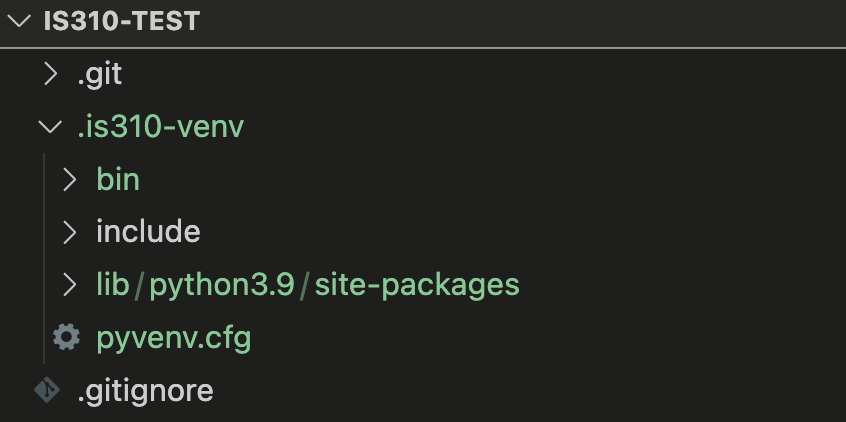
Created Environment
Keep the .venv Name and Location
Do not rename or move .venv after creating it. Virtual environments contain paths to their original location. If you need a different name or location, delete the environment and create a new one there.
We will consistently use .venv for this repository. The leading period also helps identify it as project configuration rather than coursework, and later we will add .venv/ to .gitignore so it is not committed to GitHub.
Activating Your Virtual Environment
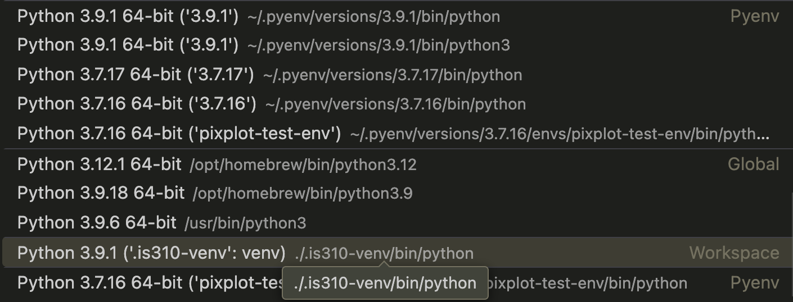
VS Code should select the newly created .venv automatically. The interpreter list organizes environments by type and location, helping us distinguish the project environment from globally installed Python interpreters.
Activated Venv in VS Code

Virtual Environment Activated
Once you select the virtual environment, its Python interpreter should appear in the VS Code status bar. This selection tells VS Code which Python to use when running code, debugging, and providing language features.
Not Activated? Select Interpreter!
If .venv is not selected, open the Command Palette, choose Python: Select Interpreter, and select the interpreter inside .venv. You can also select the Python version shown in the status bar to switch interpreters.

Select Python Interpreter
Final Check
After selecting .venv, close any terminal that was already open and create a new VS Code terminal. You should see (.venv) at the beginning of the prompt, indicating that the environment is active.

Activate Virtual Environment
Creating Virtual Environments in Terminal (Optional)
VS Code provides a convenient interface for creating virtual environments, and I recommend that method for this course. The following slides show the equivalent terminal workflow because you may see me use it in class and because it makes the underlying commands visible.
Start in the Project Folder
To create the environment in the terminal, first navigate to your is310-coding-assignments project directory. We will create .venv directly inside that project, matching the VS Code convention.
Creating Virtual Environments in Terminal
On macOS or Linux:
On Windows PowerShell:
If Windows does not recognize python, try py -m venv .venv.
Activating Virtual Environments
On macOS, Linux, or WSL:
On Windows Command Prompt:
On Windows PowerShell:
If you are getting errors in PowerShell, you may need to change your execution policy. You can do this by running the following command:
Deactivating Virtual Environments
To deactivate your virtual environment in the terminal:
Your virtual environment will no longer be in the terminal prompt.
This removes (.venv) from the terminal prompt. In VS Code, closing the active terminal and opening a new one after selecting a different interpreter also starts a new shell context.
Adding to .gitignore
Virtual environments are specific to your computer. Don’t commit them to git.
Add this to your .gitignore:
Or if you accidentally committed it:
Then add .gitignore, commit the change, and run git status to confirm that .venv is no longer tracked.
Installing Libraries with pip in venv
Now that we have our virtual environment created and activated in VS Code, we can start to try installing external Python libraries.
Today, we will try installing the Python package Rich by running the following command:
Remember: Always do this with your virtual environment activated!
Testing the Installation
To verify the installation worked:
Or check all installed libraries:
Either command should show whether Rich is installed and which version is present.
Recording Package Requirements
Do not commit or share .venv. Record the packages needed to recreate it:
Someone who clones the repository can create and activate their own environment, then install the same versions:
site-packages
You can also look in your virtual environment directory and see if there is a site-packages directory. This is where all the libraries you install with pip are stored. You can see that the Rich library is installed in the site-packages directory.
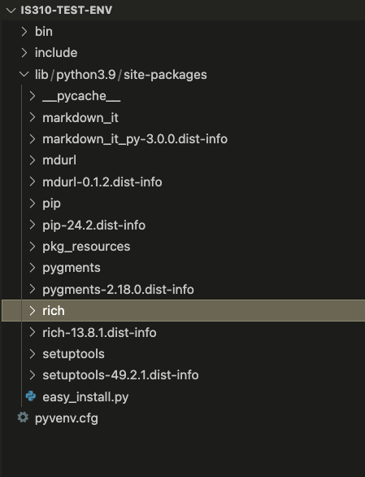
Rich Installed
The Rich Library
Rich is a Python library created by Will McGugan to add formatted text, tables, progress indicators, and other visual elements to terminal applications. Its source code and development history are available in the Rich GitHub repository.
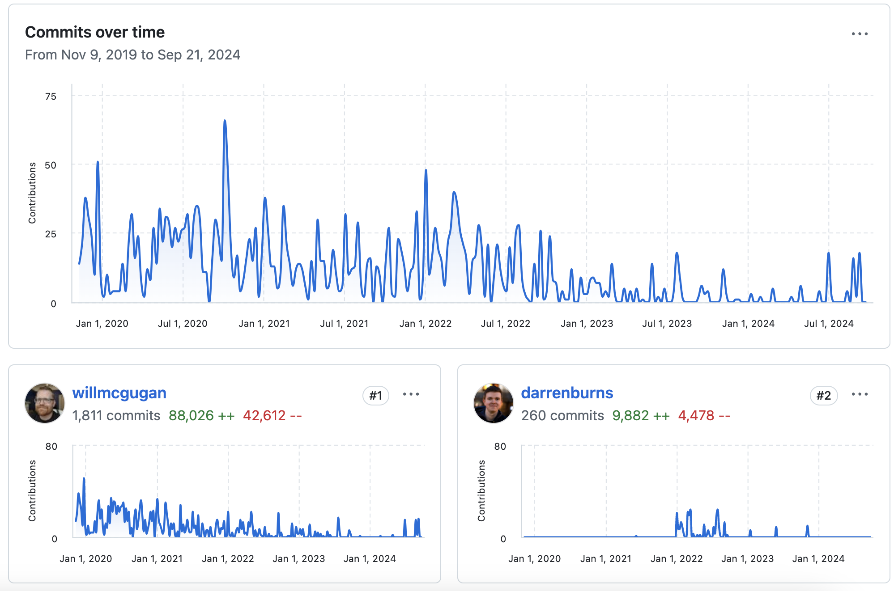
Rich Features
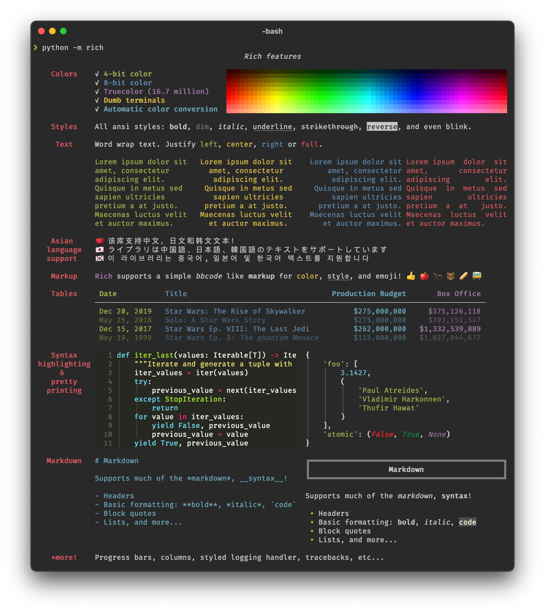
We can start to get a sense of what the library can do by looking at the features listed on the GitHub repository but we can also read the documentation for the library to get a better sense of what it can do https://rich.readthedocs.io/en/stable/introduction.html.
Rich Documentation
This documentation is very detailed, but we can start with the Quickstart guidelines https://rich.readthedocs.io/en/stable/introduction.html#quick-start to get a sense of how to use the library.
From the guidelines we can see how to import the library into our Python script. In your is310-coding-assignments directory, create a new folder called python-libraries and create a new file called rich_example.py. In this file, add the following code:
Rich Outputs
Run it:
You should see the following output in your terminal:
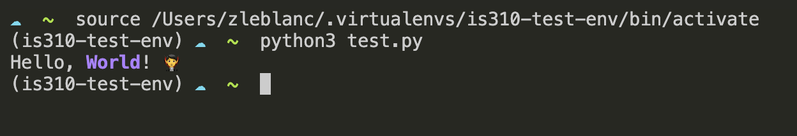
Notice that the word world is in bold and magenta and that there is a vampire emoji at the end of the sentence. This is the power of the Rich library.
Rich Tables
Rich has powerful classes like Console and Table for formatting:
from rich.console import Console
from rich.table import Table
console = Console()
table = Table(title="Star Wars Movies")
table.add_column("Released", style="cyan", no_wrap=True)
table.add_column("Title", style="magenta")
table.add_column("Box Office", justify="right")
table.add_row("Dec 20, 2019", "Star Wars: The Rise of Skywalker", "$952,110,690")
table.add_row("May 25, 2018", "Solo: A Star Wars Story", "$393,151,347")
table.add_row("Dec 15, 2017", "Star Wars Ep. VIII: The Last Jedi", "$1,332,539,889")
table.add_row("Dec 16, 2016", "Rogue One: A Star Wars Story", "$1,332,439,889")
console.print(table)And you should see the following output in your terminal:
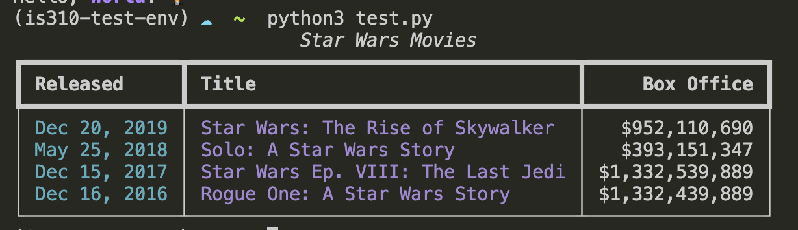
Rich Classes
You’ll notice this documentation is somewhat difficult to read, but it does show us the different methods and attributes that are available to us in the Console class. We can also click the small green source button to see the source code for the class https://rich.readthedocs.io/en/stable/_modules/rich/console.html#Console.
Rich with Data Structures
You can use Rich to format data from lists and dictionaries:
from rich.console import Console
from rich.table import Table
# Create a Console instance to print formatted text
console = Console()
# Initial movie data stored in a list of dictionaries
movies = [
{
"Released": "Dec 20, 2019",
"Title": "Star Wars: The Rise of Skywalker",
"Box Office": "$952,110,690"
},
{
"Released": "May 25, 2018",
"Title": "Solo: A Star Wars Story",
"Box Office": "$393,151,347"
},
{
"Released": "Dec 15, 2017",
"Title": "Star Wars Ep. VIII: The Last Jedi",
"Box Office": "$1,332,539,889"
},
{
"Released": "Dec 16, 2016",
"Title": "Rogue One: A Star Wars Story",
"Box Office": "$1,332,439,889"
}
]
# Loop through the list of movies
for movie in movies:
console.print("\n[bold cyan]Reviewing movie information:[/bold cyan]")
for field, value in movie.items():
console.print(f"[magenta]{field}[/magenta]: {value}")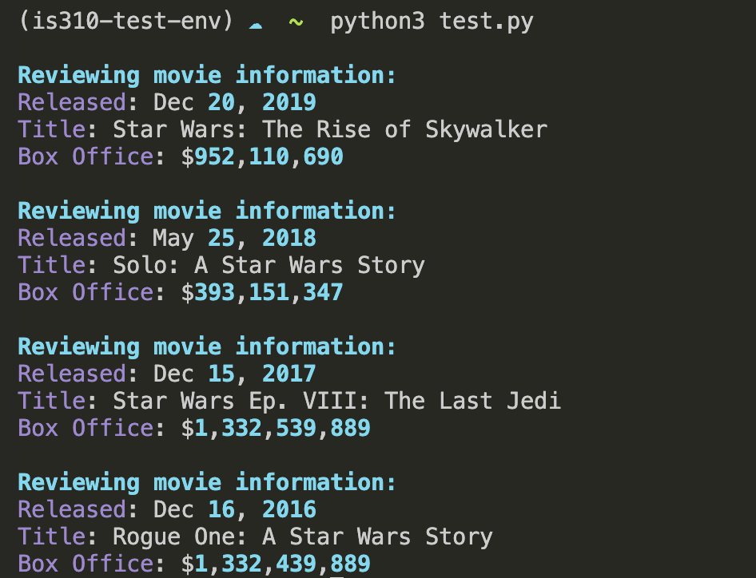
Homework: Command Line Data Curation
Two Development Pathways
Without AI
Build and document a working Python CLI that collects and saves structured cultural data.
With AI Assistance
Build the CLI and an equivalent HTML interface, then compare the two approaches.
Compare the Interfaces
- What does each interface make easier or harder?
- Did the fields, instructions, or validation change?
- What did AI contribute?
- What did you revise, reject, or troubleshoot?
- Which interface better fits the cultural material and intended user?
What to Submit
cli_data_entry.pyREADME.mdwith installation and running instructionsrequirements.txt- A sample structured data file produced by the script
ai-chat-log.md, or a note that no AI chatbot was used- For the AI-assisted pathway: HTML, CSS, and JavaScript files plus the interface comparison
Comments and Documentation